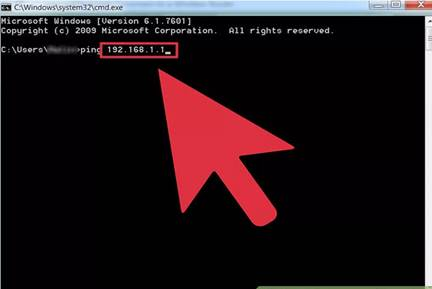
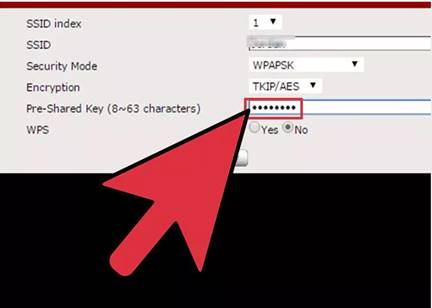
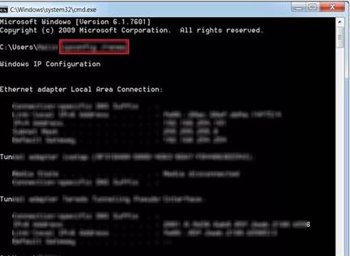

Steps:
1. Ping your router from your PC. Go to Start > Run > type "command" without quotes. Or "CMD" for Windows XP. Then type ping 192.168.1.1 (if this is the address of your router)
2. Unplug the router from electricity.
· Pause (about 10 seconds) then plug it back in.
· Check by going into the router by going onto your URL white address bar and after http:// (typing) 192.168.0.1 or 192.168.1.1 or 192.168.0.5 or 192.168.0.227 or whatever.
· Then enter username and password for the router (eg admin / admin) and click Router status.
· To reset the username and password to the manufacturer's default setting, press "reset" or stick a pin into the hole at the back of the router (but remember to alter the password later).
3. Check that the cable is connected from the router to the telephone line.
4.  Check the WEP code by going into the router (192.168.0.1 or whatever) entering username and password for the router (e.g. admin/admin) and click Setup Wizard, reentering the correct WEP code.
5. Try turning your computer off and on again if that doesn't work.

6. Try START ... RUN ... cmd ... IPCONFIG /renew.
If you are still getting nowhere, it is possible that your ISP is down.